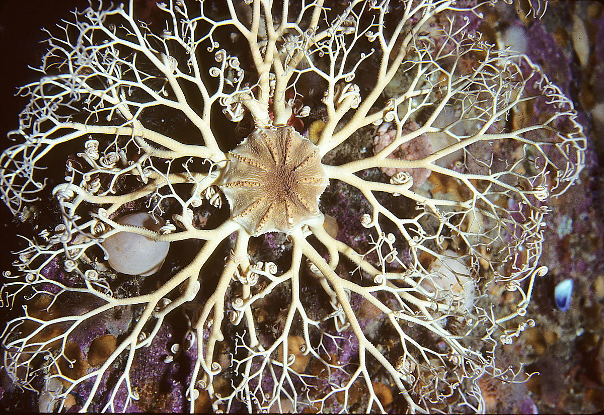
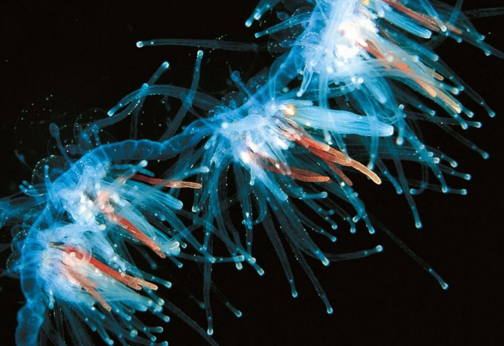

Gorgonocephalus eucnemis - вид офиур из семейства Gorgonocephalidae. Являются одними из самых крупных офиур, диаметр диска может достигать 14,3 см. От диска отходят 5 многократно дихотомически ветвящихся лучей, очень гибкие и подвижные веточки которых образуют сложное сплетение диаметром до 0,5 м. На ранних стадиях развития горгоноцефалы имеют простые, неразветвлённые лучи (стадия настоящей офиуры). При достижении определённого возраста лучи начинают раздваиваться на концах. Сначала на каждом луче образуется по две ветви, со временем каждая из этих ветвей делится ещё на две и так далее пока каждый луч не становится похож на ветку дерева. Представители разных популяций вида Gorgonocephalus eucnemis могут достаточно сильно отличаться по количеству, густоте расположения и размерам гранул и зёрен на диске, интенсивности ветвления лучей, окраске и т. п. Обитают главным образом в арктических и бореальных водах обоих полушарий, однако некоторые виды встречаются и в субтропической зоне. Распространены в основном на сублиторали материкового шельфа. Встречаются обычно на каменистых участках дна, омываемых течениями
 Ссылка на офиуруApolemia uvaria — сифонофор из семейства Apolemiidae. Как большинство представителей сифонофор, представляет собой колонию, состоящую из отдельных организмов (зооидов), каждый из которых выполняет отдельную функцию, будь то добыча пищи, защита или передвижение колонии. Зоны распространения - Атлантический и Тихий океан, берега Норвегии, США и Канады. Встречается в пелагической зоне на различной глубине, обычно не глубже 100 м. Длина колонии может достигать 30 метров, однако чем ближе к поверхности океана, тем короче протяженность колонии, что главным образом связано с ее хрупкой структурой, легко разрываемой волнами. Аполемия является хищником, питается преимущественно планктоном, который отлавливает специальными отростками на манер сети. Обладает сильным ядом, способным убивать достаточно крупных рыб и оставлять серьезные ожоги млекопитающим.
 Ссылка на сифонофору